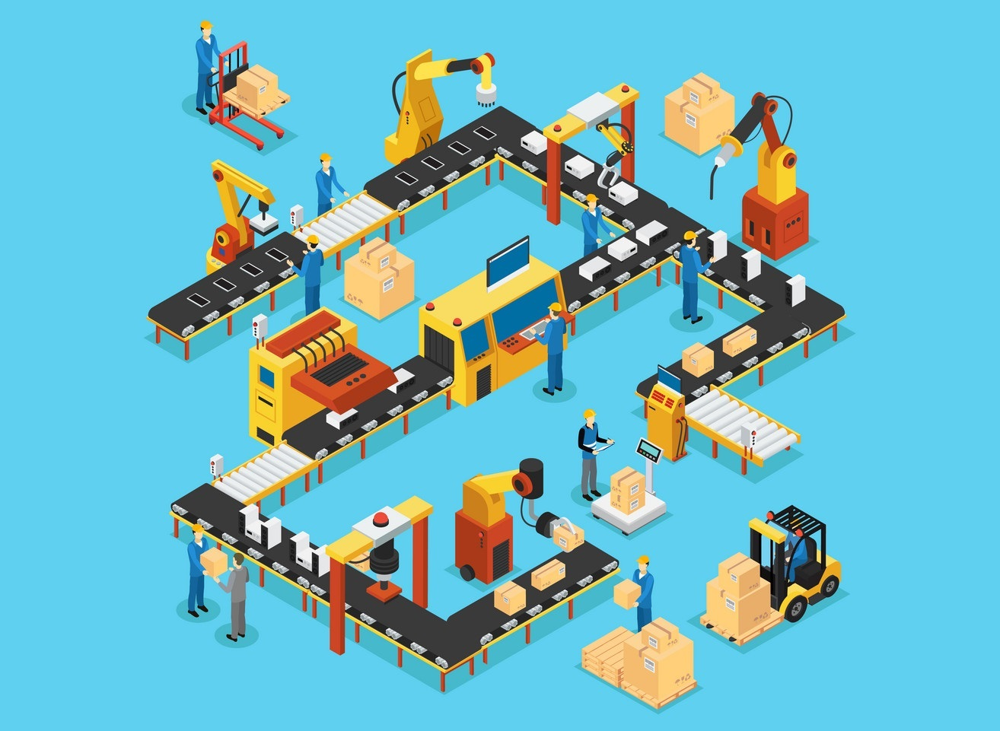

La ingeniería se define como: la creación, modificación y utilización de la tecnología en complemento con el estudio de todas las ciencias básicas de la vida, para satisfacer todas las necesidades humanas, haciendo así que la ingeniería sea importante en todas las profesiones existentes. Teniendo en cuenta esto, se ve claramente como ésta se convierte en una disciplina capaz de ayudar y resolver los problemas actuales de la sociedad, ya que en estos momentos el mundo es realmente tecnológico.
Esta ciencia está relacionada en cierta medida en los campos de la investigación, el diseño, la producción, el desarrollo, la construcción, la gestión, las ventas, el comercio, las operaciones, etc. Las personas que han recibido formación profesional en esta disciplina se denominan ingenieros, sin embargo, otras, como técnicos, inspectores o diseñadores, aplican la ciencia y la tecnología y la materia de la misma manera para resolver problemas técnicos y prácticos.
Al estudiar una de las ramas de la ingeniería, la persona se capacita para desarrollar soluciones técnicas, construir estructuras, residenciales, industriales y de servicios. Los ingenieros cuentan con los conocimientos necesarios para responder con confianza y profundidad a las necesidades económicas, sociales e industriales, aportar soluciones y afrontar las dificultades que puedan surgir en el desarrollo de los proyectos. También a tener un mundo más sostenible y abordar los desafíos del cambio climático y buscar soluciones más ecológicas.
La ingeniería es uno de los campos más prácticos. Como ingeniera, debes potenciar tu creatividad y tus habilidades técnicas para resolver una amplia variedad de problemas dentro del mundo real.
La ingeniería puede entenderse desde diferentes aspectos: desde la vida social, desde su relación con el conocimiento y la vida sociales y finalmente, como profesión. A continuación, se hace referencia a cada una de estas categorías:
- La ingeniería como aspecto de la actividad social: La ingeniería es la creación, la modificación y la utilización de las tecnologías articuladas por medio del conocimiento científico.
- La ingeniería como profesión: La ingeniería es la profesión encargada de estar al frente del desarrollo tecnológico; también se visualiza desde el en enfoque de las actividades, y finalmente desde la perspectiva de la creación, de la modificación y de la utilización de tecnologías, articuladas por medio de ciencias.
- La ingeniería como relación con el conocimiento y los objetivos sociales:En este enfoque, la ingeniería es la síntesis de conocimientos de varias ciencias y disciplinas, que sirven para realizar modelos matemáticos de secciones definidas de la realidad, la cual en conjunto con conocimientos más o menos empíricos y no sistematizados de diversas técnicas y prácticas sociales, tiene el objetivo de resolver problemas de la sociedad y sus individuos, minimizando el esfuerzo y los costos de todo tipo.
Características de la ingeniería
A pesar de tener muchas ramas, en cada una de ellas se encuentran factores similares entre sí, como:
Uso de las matemáticas
Seguramente te estarás preguntando para qué sirven las matemáticas en la Ingeniería. Debes considerar que el lenguaje de las ciencias no solo facilita realizar cálculos precisos a la hora de ejecutar proyectos, sino que también pueden ayudar a los ingenieros a razonar mejor, dándoles la capacidad de resolver complejidades.
Sin la correcta preparación en áreas de álgebra, cálculo, lógica, matrices, entre otras, es imposible que un ingeniero pueda reconocer, interpretar, representar y modelar problemas del sector en donde se desarrolla. Es fundamental para poder aplicar este conocimiento en otras ciencias básicas, como física y química.
Innovación
La carrera de Ingeniería busca el desarrollo de ideas novedosas que encuentren mejoras y soluciones en un área particular. Que estas sean:
- Nuevas e innovadoras
- Que supongan un desarrollo y avance social
- Que proporcionen una mejora técnica
- Que satisfagan a todos, los fabricantes, comercializadores, instaladores y el usuario final

Optimizar la ejecución de las obras:
- sobre todo con la reducción de tiempos de ejecución, aquí tiene una gran importancia los elementos prefabricados o la construcción industrializada, de partes de un edificio o incluso llegando a dar soluciones de edificios prefabricados en taller.
- Aumentar el Confort de los edificios con la incorporación de todas las instalaciones necesarias para un correcto uso del mismo y la automatización de todas ellas, de manera que el usuario disfrute de su estancia sin contratiempos.
- No podemos olvidar la Seguridad, factor siempre imprescindible a la hora de realizar todas las instalaciones de cualquier obra, estas deben poder utilizarse sin que supongan ningún riesgo para la integridad de cualquier usuario, adultos, niños, personas con movilidad reducida e incluso si pudiera haber la presencia de animales. Innovar, no debemos olvidar ya que esta es la base de la ingeniería y el motor que hace que se mejoren todas las técnicas e instalaciones aplicadas a las obras.

Importancia de la ingeniería
Como hemos definida hasta aquí, la Ingeniería es la encargada de aplicar los conocimientos científicos e invenciones que el hombre hace a las construcciones dándole un uso y utilidad a la sociedad o usuarios de esos edificios. Es decir usar el ingenio en los descubimientos y avances que se realizan de manera pragmática y ágil, ya que la ingeniería es una actividad limitada o encerrada en su tiempo y recursos que nos rodea o somos capaces de explotar.
Aunque la Importancia de la Ingeniería y su estudio dentro de un campo del conocimiento se puede afirmar que se inicia al comienzo de la revolución industrial, realmente es el pilar de la REVOLUCIÓN INDUSTRIAL y de las sociedades modernas. Pero realmente su Importancia siempre ha estado ahí desde que el hombre se hace sedentario, es decir desde el origen del hombre, este ya comienza a utilizar herramientas y conocimientos, que aunque arcaicos o primitivos, le ayudan a mejorar su vida y entorno
Tipos de Ingeniería
- Ingeniería Química Estudia la transformación de compuestos y materias primas para la elaboración de productos que se puedan comercializar. Un ingeniero químico crea sustancias a nivel industrial. Está muy relacionada con las ingenierías de alimentos, minas e industrial.
- Ingeniería Física Se encarga de desarrollar teorías de los procesos naturales para después ser llevados a la práctica. Un ingeniero físico tiene un campo laboral muy extenso, ya que desarrolla un intelecto amplio en matemáticas aplicadas y conoce una gran variedad de temas relacionados con procesos naturales.
- Ingeniería Mineral Está conformada por cuatro campos de estudio: ingeniería de minas, ingeniería metalúrgica, ingeniería en petróleo e ingeniería en cerámica. En la ingeniería mineral aprendes los procesos para extraer materia prima localizada debajo de la Tierra. El ingeniero debe tener conocimientos amplios del subsuelo y de cómo manejar aparatos de extracción. Se trabaja con temperaturas extremas y materiales pesados. Una vez extraída la materia prima, el ingeniero también se encarga de la transformación de esta para su comercialización.
- Ingeniería Mecánica La ingeniería mecánica se especializa en el diseño y desarrollo de piezas mecánicas para todos los sectores de manufactura, transporte y robótica. En sus estudios y en el desarrollo de proyectos de ingeniería mecánica se aplican principalmente principios de la termodinámica o la física. Se enfoca en la construcción y mantenimiento de maquinaria que ayuda a optimizar el funcionamiento de algún sistema.
- Ingeniería Eléctrica El egresado en ingeniería eléctrica podrá desempeñar sus conocimientos en la producción, transporte y comercialización de energía eléctrica. El conocimiento necesario para esta ingeniería es de física, matemáticas y de los componentes eléctricos materiales y la naturaleza de la electricidad. De este modo, el egresado podrá distribuir y manejar la electricidad de la manera más sustentable posible y con mayor escala.
- Ingeniería Civil Se encarga de administrar todos los procesos relacionados con una obra de construcción (estructura, materiales, tiempo de entrega, propiedades del suelo, etc.). Es una carrera en constante evolución, ya que los materiales y las técnicas utilizadas para la construcción avanzan junto con las nuevas tecnologías. El ingeniero civil se asegura de que en una obra todo tenga un orden y que la entrega final sea eficaz y eficiente tanto internamente como en sus factores externos.
- Ingeniería en Sistemas y Software Requiere de un conocimiento amplio de lógica matemática, ya que la mayoría de sus funciones y programas se diseñan de manera intangible. El egresado podrá trabajar en cualquier empresa que necesite herramientas para agilizar su productividad, mediante sistemas de control e intercambio de información y transacciones económicas vía internet. Hoy en día, un ingeniero en sistemas y software tiene un amplio campo laboral lleno de oportunidad y crecimiento tecnológico.
- Ingeniería Mecatrónica Es una nueva disciplina que busca integrar los conocimientos de la ingeniería mecánica, electrónica e informática en el desarrollo de nuevas tecnologías que solucionen problemas de maquinaria inteligente. Esto para ayudar a la mano de obra humana y mejorar los procesos de creación de productos.
- Ingeniería Electrónica y Telecomunicaciones Similar a la ingeniería eléctrica, el egresado tendrá conocimientos de la naturaleza de la electricidad, circuitos eléctricos y su transporte, pero esta ingeniería se enfoca en transformar la electricidad para resolver problemas de telecomunicaciones, ingeniería informática y el control automático de los sistemas. . La ingeniería electrónica está principalmente enfocada en el ámbito de la informática, las telecomunicaciones y la automatización de sistemas. En definitiva, se trata del estudio de la gestión de la transmisión y la recepción de información.
- Ingeniería en Alimentos En esta ingeniería aprenderás a transformar los alimentos por medio de procesos químicos, para la mejora en la vida útil de la materia prima comestible, sin eliminar su valor nutritivo. Generarás cambios en la producción de estos alimentos, los cuales agregarán tiempo de vida comestible al producto sin sacrificar su calidad y costo de producción. De esta manera, ayudarás directamente a la economía del mexicano, así como a su correcta nutrición.
- Ingeniería Industrial La ingeniería industrial abarca todo lo relacionado con el desarrollo y la producción de bienes y servicios. A gran escala administrarás costos, calidad y diseño, entre otros factores necesarios para la creación, distribución y mejora de un producto o servicio. Además, el poder administrar el trabajo realizado desde un punto de vista crítico en cada una de sus áreas.
- Ingeniería Ambiental Su estudio se centra en la preservación y conservación de los recursos para obtener un resultado sostenible que mejore la calidad de vida de los humanos y el planeta. Esta ingeniería piensa integrar a un producto, estructura o servicio, responsabilidad social que impactará al consumidor tanto a corto como a largo plazo, sin sacrificar grandes cantidades en costos de producción y de materiales.
- Ingeniería de materiales La ingeniería de materiales es una rama de la ingeniería que estudia, diseña y proyecta la estructura, composición y funcionamiento de un material para conseguir un conjunto predeterminado de propiedades. Esta ingeniería está muy relacionada con la mecánica y la fabricación.
- Ingeniería Biomédica Se enfoca en administrar herramientas médicas de vanguardia para ayudar en el diagnóstico, tratamiento y rehabilitación del paciente. En esta ingeniería aprenderás conocimientos básicos de medicina, mecánica e ingeniería de materiales, los cuales llevarás a la práctica en el desarrollo de nuevas tecnologías para la medicina, el mantenimiento de aparatos ya existentes o en el análisis de datos que ayudarán a dar un mejor diagnóstico al paciente.